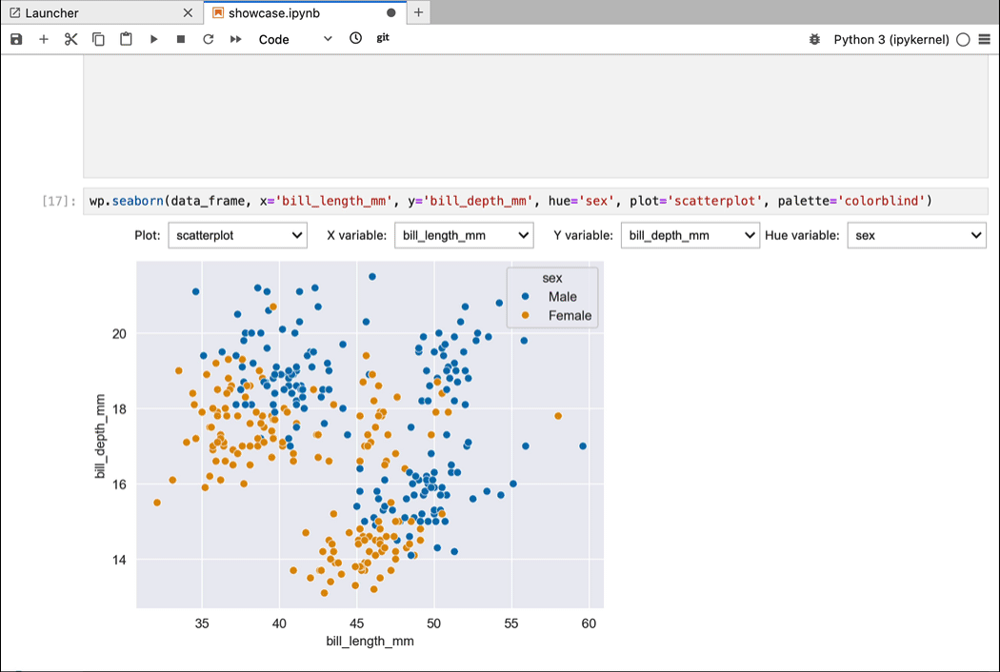

import seaborn as sns
data = sns.load_dataset('penguins')Getting started
iplot lets you explore the relationships between variables in a dataset using the standard visualization libraries - without writing new code for each plot.

Installation
conda install -c munch-group iplotSeaborn
The iplot function produces a widget with dropdown menus that lets you change all the specified dimensions of your visualization.
You can load an example data frame like this:
Display the widget:
from iplot import iplot
iplot(data)